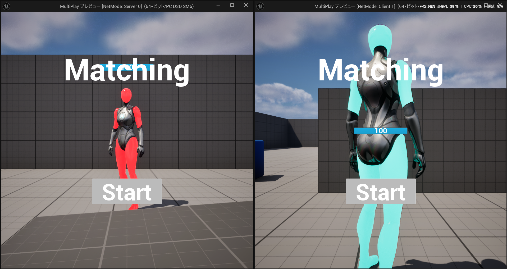
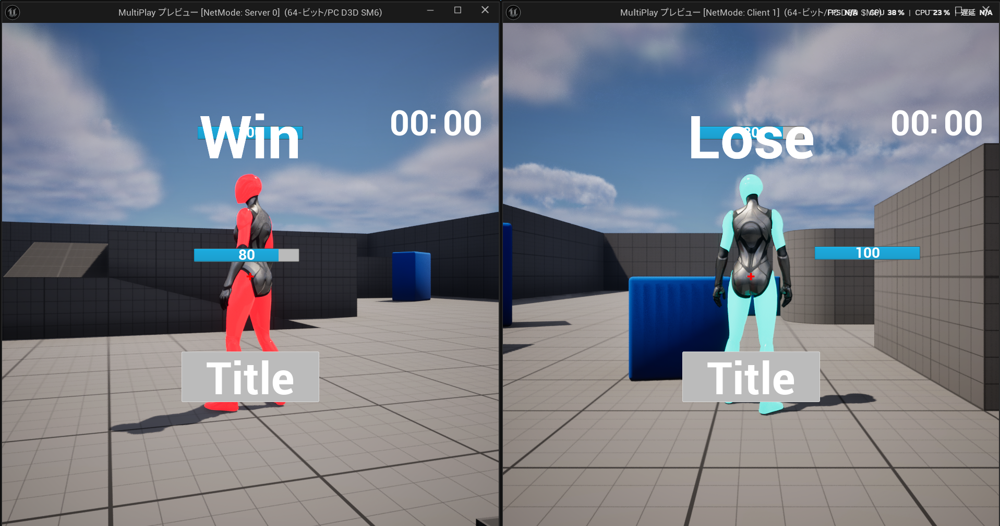
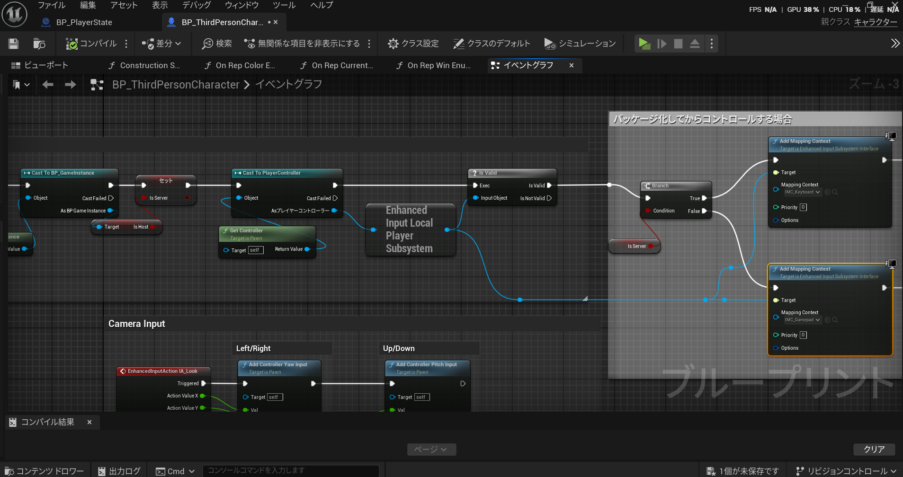

マルチプレイ
Unreal Engine 5
一か月
一人
企画・設計・実装（全工程）
授業でUnreal Engine 5のネットワーク機能について
学ぶ課題として制作しました。
個人でどこまでオンライン対戦・協力プレイの
仕組みを理解し実装できるか試すため、
ローカル2人プレイとオンライン接続の両方に
対応したマルチプレイ基盤を作ることに挑戦しました。
対戦型のマルチプレイゲームであるため、
先に準備が整った側だけ先に動けてしまうと不公平になってしまいます。
そこで、InGameに入ると待機画面を表示し、
2人のプレイヤーが揃っていること、
そしてお互いが準備完了ボタンを押していることを確認してから、
ゲームが同時に始まるようにする仕組みを実装しました。

ローカル2人プレイでは、1台のPCで2つのウィンドウ
（サーバー用とクライアント用）を同時に動かすため、
最低でも2人は同時に操作できるようにする必要がありました。
そこで、キャラクターの起動時に
自分がサーバー側かクライアント側かを判定し、
サーバー側ならキーボード用、
クライアント側ならゲームパッド用のマッピングコンテキストを
自動的に割り当てるようにしました。
この仕組みにより、同じPCでプレイできるようになりました。
今回、UE5でのネットワークを使ったゲームの作り方を学んだうえで
最も大きな学びは、どこまでをサーバー側で処理して
それ以外を各々の所で処理させるかを学べたことです。
例えば、サーバー側で動かすのはお互いが
リアルタイムで共有すべきHPの減算や勝敗判定で
各々で行うのは自分自身がサーバーかクライアントかを
判断して行う入力デバイスのマッピングコンテキストの割り当て
など仕組みを考えてどちらで行うかがわかるようになりました。
今後、UE以外でのネットワークを介したシステムを作る際にも
活かしていきたいと思います。